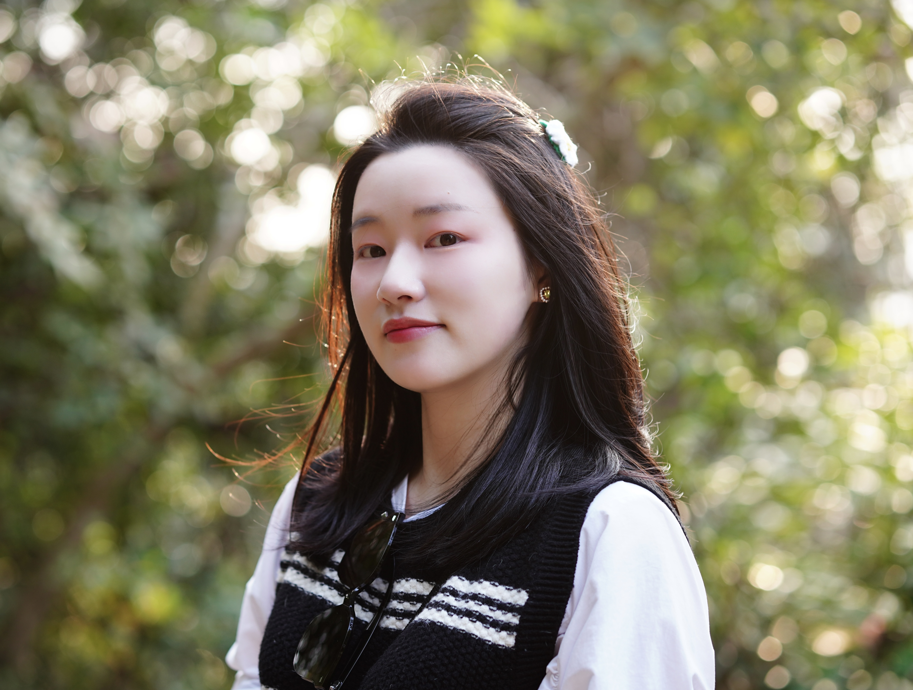

电子与计算机工程
香港科技大学
研究，始于好奇。
表达，贵在清晰。
我从电气工程和传感器实验研究走入器件物理。现在，我关注晶体管不断变窄时，哪些原子级细节会影响器件行为。
目前，我在香港科技大学攻读博士，导师为 Mansun Chan 教授。材料、器件制备、电学测试与量子输运方面的经历，帮助我将物理机制与工程问题联系起来。
研究之外，我也参与视觉设计、公开演讲、教学与学生指导。把一个想法讲清楚，是我重视的工作方式。
01
用视觉表达想法
获 2023–2024 年度 ECE 最佳标志设计奖季军。
02
在交流中分享研究
获 2025 年 IEEE 下一代器件与集成存储研讨会优秀口头报告奖。
03
与学生一起学习
曾指导五名学生的研究，涵盖本科、硕士与博士阶段。
求学之路
跨越尺度，
持续学习。
- 2022 年 9 月至预计 2027 年 6 月
香港科技大学
电子与计算机工程博士（在读）
导师 · Mansun Chan 教授 (IEEE Fellow) - 2019 年 9 月至 2022 年 6 月
重庆大学
电气工程硕士
输配电装备及系统安全与新技术国家重点实验室
导师 · 陶璐琪教授 - 2015 年 9 月至 2019 年 6 月
四川轻化工大学
电气工程及其自动化学士
教学与学术服务
担任电子电路、集成电路器件及先进 CMOS 器件课程助教。
曾参与 IEEE EDTM 2025 和 IEEE EDSSC 2026 会议志愿服务。
我的获奖
探索路上，
有所收获。
- 2025 年
优秀口头报告奖
IEEE 下一代器件与集成存储研讨会
- 2023–2024 年
ECE 最佳标志设计奖季军
- 2022 年至今
香港科技大学研究生助学金
- 2022 年
优秀硕士毕业生
重庆大学
- 2022 年
优秀硕士学位论文
重庆大学电气工程学院
- 2020、2021 年
研究生 A 等学业奖学金
重庆大学
- 2019 年
优秀毕业生
四川轻化工大学
- 2018 年
创业计划竞赛铜奖
“创青春”四川省大学生创新创业大赛
- 2015–2018 年
优秀学生奖学金
获奖三次。
- 2017 年
C 类二等奖
全国大学生英语竞赛
- 2016–2017 年
优秀学生干部
- 2016 年
辩论赛一等奖
黄岭学院“团庆系列活动”
兴趣爱好
研究之外，
也有热爱。
01
挥拍之间
我喜欢打羽毛球。
02
旋律之中
唱歌也是我的兴趣之一。